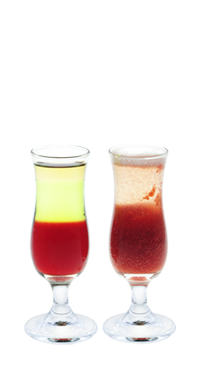

Дрим шот — Лучше, чем орешки!
По аналогии с тремя орешками для Золушки, исполняющими желания по мере вскрывания, два дрим-шота исполняют желания по мере выпивания…
Легенда коктейля
По аналогии с тремя орешками для Золушки, исполняющими желания по мере вскрывания, два дрим-шота исполняют желания по мере выпивания.
Если с первого раза не сработало — повтори еще!
- Как приготовить:
-
- Налей в стопку черносмородиновый ликер 20 мл
- Используя коктейльную ложку, уложи слоями яблочную самбуку 15 мл и золотой ром 15 мл
- Положи в блендер малину 5 ягод и взбей
- Перелей во вторую стопку малиновое пюре из блендера
- Используя коктейльную ложку, уложи слой игристого вина сухого 25 мл
- Выпей сперва шот с ромом, а затем с игристым вином